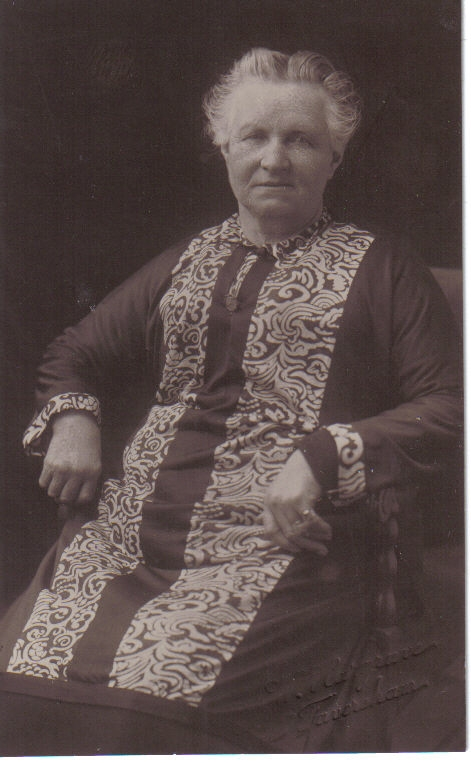
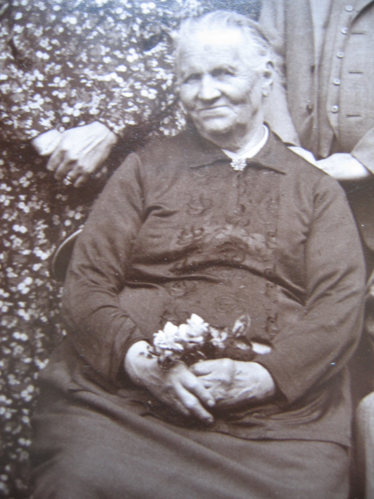
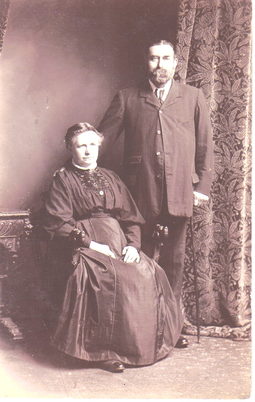
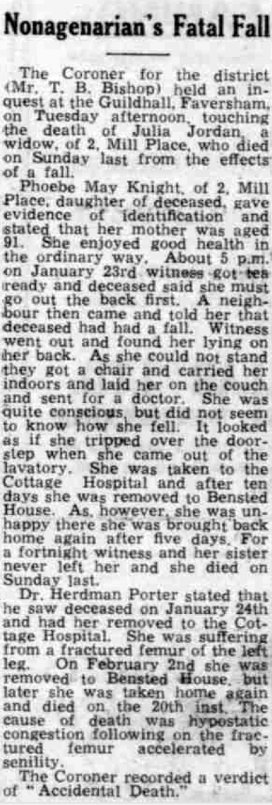
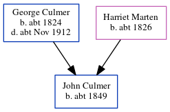

Julia Jordan (née Culmer) 1852 - 1944
[ Home ] | [ Calendar ] | [ Surnames Index ] | [ Errors ] | [ Family History ]The child of George Culmer (an agricultural labourer) and Harriet Marten, Julia Culmer, the first cousin three-times-removed on the mother's side of Nigel Horne, was born in Canterbury, Kent, England on 17 Apr 18521,2, was baptised there at St Andrew's Church on 23 May 1852 and married James Jordan (a horse keeper with whom she had 10 children: Sarah Elizabeth, Louisa, Frederick John Thomas, Alice Ann Harriet, Rosamond Julia, Edith Emma Nellie, James George Charles, Phoebe May, Christopher Gerald and Kathleen Mary, along with 3 surviving children) at St Mary Of Charity Church, Church Road, Faversham, Kent, England on 1 Apr 18764.
During her life, she was living at St Thomas Hill in Canterbury on 7 Apr 18615; and at 2 Mill Place in Faversham on 3 Apr 18817 - less than a mile from her brother Charles who was living at 56 Tanners Street in Faversham, on 5 Apr 18916, on 31 Mar 19018, on 2 Apr 19119 and on 29 Sept 19391 which is where she died on 20 Feb 19443 (hypostatic congestion following a fall at home) (hypostatic congestion following a fall at home).
Parents
- George was born c. 1824
- Harriet was born c. 1826
Children
- Louisa was born on 30 Jul 1876
- Frederick John Thomas was born on 30 Apr 1880
- Alice Ann Harriet was born on 25 Nov 1881
- Rosamond Julia was born on 19 Nov 1883
- Edith Emma Nellie was born c. Nov 1885
- Phoebe May was born on 23 Apr 1889
- Christopher Gerald was born on 18 Feb 1891
Citations
- 1939 Register - Findmypast (was recorded at this address)
- England & Wales births 1837-2006 - Findmypast
- England & Wales deaths 1837-2007 - Findmypast
- Kent, Canterbury Archdeaconry Marriages - Findmypast
- 1861 England, Wales & Scotland Census - Findmypast (was age 9 and the daughter of the head of the household)
- 1891 England, Wales & Scotland Census - Findmypast (was age 38 and the wife of the head of the household)
- 1881 England, Wales & Scotland Census - Findmypast (was age 28 and the wife of the head of the household)
- 1901 England, Wales & Scotland Census - Findmypast (was age 48 and the wife of the head of the household)
- 1911 Census for England & Wales - Findmypast (was age 58 and the wife of the head of the household)
Media
Julia Culmer - 1

Julia Culmer - 2

1861 UK Census

1891 UK Census

1881 UK Census

1901 UK Census

1911 UK Census - page 2

James Jordan and Julia Culmer

Whitstable Times and Herne Bay Herald 26 Feb 1944

England & Wales births 1837-2006 - BMD/B/1852/2/AH/000875/020
1939 Register Transcription - TNA-R39-1715-1715J-013-20
England & Wales deaths 1837-2007 - BMD/D/1944/1/AZ/000603/098
England Marriages 1538-1973 - R_848611217/2
Kent, Canterbury Archdeaconry Marriages Transcription - GBPRS-CANT-M-97028366-2
England Marriages 1538-1973 - R_854023152/2
1861 England, Wales & Scotland Census Transcription - GBC-1861-0003450767
1881 England, Wales & Scotland Census Transcription - GBC-1881-0004769062
1891 England, Wales & Scotland Census Transcription - GBC-1891-0005793046
England & Wales marriages 1837-2005 - BMD/M/1876/2/AZ/000066/135
Kent Baptisms - GBPRS/CANT/B/96698417
England Births & Baptisms 1538-1975 - R_884059778
England Births & Baptisms 1538-1975 - R_937841777
Family Tree
Map
Generated by ged2site. Last updated on Jul 3, 2024
Known Issues
Census information missing between Census UK 1861 and Census UK 1881